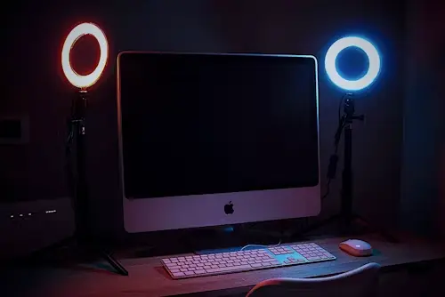

Hello! I'm Daniel Udung
I'm a web developer with a passion for building beautiful, user-friendly, and responsive websites. I'm currently completing my final year of study and have enjoyed learning HTML, CSS, JavaScript, and responsive design techniques.
My Skills
- HTML5, CSS3, JavaScript (ES6+)
- Responsive Web Design
- DOM Manipulation & Event Handling
- Basic Git & GitHub Workflow
- Debugging & Developer Tools
- Web Performance & Optimization
My Goals
My goal is to become a front-end developer who builds websites that not only function well but are also visually appealing and accessible to all users. This portfolio is both a reflection of what I've learned and a step forward toward a professional career in tech.